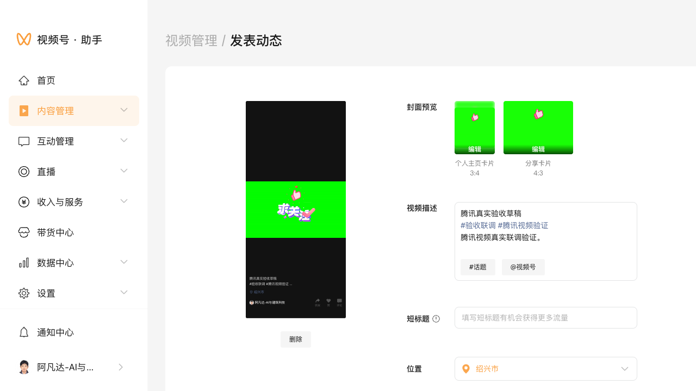

结论
平台控制面“任务执行”闭环已跑通。腾讯视频任务可以从控制面触发执行，进入真实上传，最终发布成功并回写为成功状态。
- 已通过：账号登录态落盘与校验、真实上传、最终发布、平台任务状态回写、失败断路状态自动恢复
- 已规避：上传页面结构变化导致“找不到上传框”、页面加载较慢导致的误判失败
- 已记录：页面无“原创声明”入口时不阻塞发布，但会生成诊断截图
验收范围与产物
| 模块 | 目标 | 结果 | 说明 |
|---|---|---|---|
| 前端主线接入 | 账号页可选 tencent；发布页可填腾讯字段；请求正确落到后端 | 通过 | 已支持腾讯专属字段，并修正了计划时间使用顶层 schedule_at。 |
| 登录与 cookie 校验 | 扫码登录后能正确判定“真登录成功”，并保存账号文件 | 通过 | 修正了“登录 iframe 假阳性”的成功判定与 cookie 校验等待逻辑。 |
| 上传器稳定性 | 在页面结构变化/延迟挂载时仍能找到上传控件并完成上传 | 通过 | 增加等待与 iframe 搜索、点击触发挂载等兜底策略。 |
| 控制面任务执行 | 任务可从控制面手动执行，并成功回写 succeeded |
通过 | 手动执行允许绕过旧断路/冷却；成功后自动清空断路状态。 |
关键修复点
1) 控制面手动执行与自动调度分离
将手动接口 /api/v1/tasks/<id>/run 作为“人工重试通道”，避免被历史 cooldown / circuit_open 长时间死挡；后台调度仍保留风控保护。
- 手动执行：允许立即重试（绕过保护）
- 自动调度：继续保留冷却/断路器逻辑
- 成功恢复：某次执行成功后自动清空账号级/平台级失败断路状态
2) 腾讯视频登录判定修复
补充对登录页 iframe 的识别，避免“主页面看起来已登录，但 iframe 仍为登录二维码”的假阳性，导致后续找不到上传控件。
3) 上传控件查找策略增强
针对“文件上传框延迟挂载 / 嵌在 iframe 内 / 需要点击上传区域才能出现”的情况，增加等待与兜底。
真实执行证据
以下为控制面手动执行时的关键日志片段（节选）：
SUCCESS: cookie 有效 上传前检查通过 正在上传视频中... 视频上传完毕 视频发布成功 cookie 更新完毕
原创声明诊断截图
本次页面未发现“内容声明/原创”入口，按“记录诊断后继续发布”的策略处理。

涉及改动文件
sau_frontend/src/constants/options.js（新增 tencent 平台选项与发布策略选项）sau_frontend/src/views/PublishWorkspacePage.vue（腾讯视频字段表单与 payload 映射、schedule_at 修正）sau_platform/app.py（手动执行接口允许 bypass protection）sau_platform/service.py（成功后清空断路状态、手动执行旁路）sau_platform/storage.py（新增 reset_failure_circuit）uploader/tencent_uploader/main.py（登录判定、cookie 校验、上传控件查找稳定性）
已知限制
- 腾讯页面在不同账号/灰度下 UI 可能变化，上传器仍建议保留诊断截图输出（便于快速定位）。
- “原创声明”字段在部分账号/页面可能不可见，当前策略是“无入口则跳过并继续发布”。如需强制原创，需要增加更严格的发布前置校验。